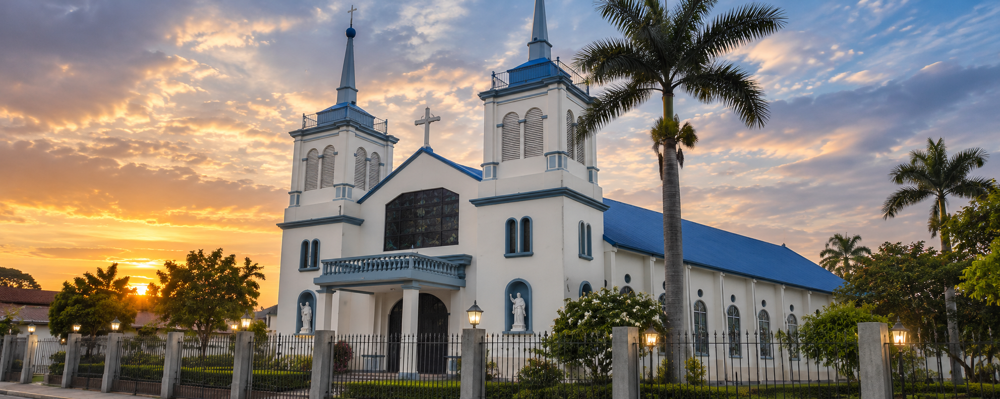
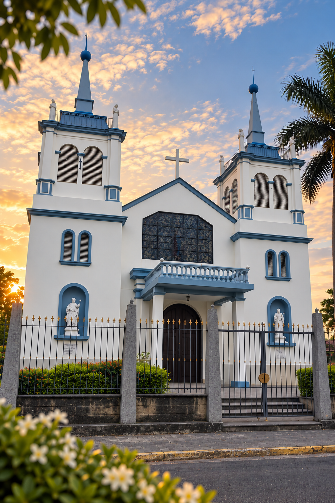
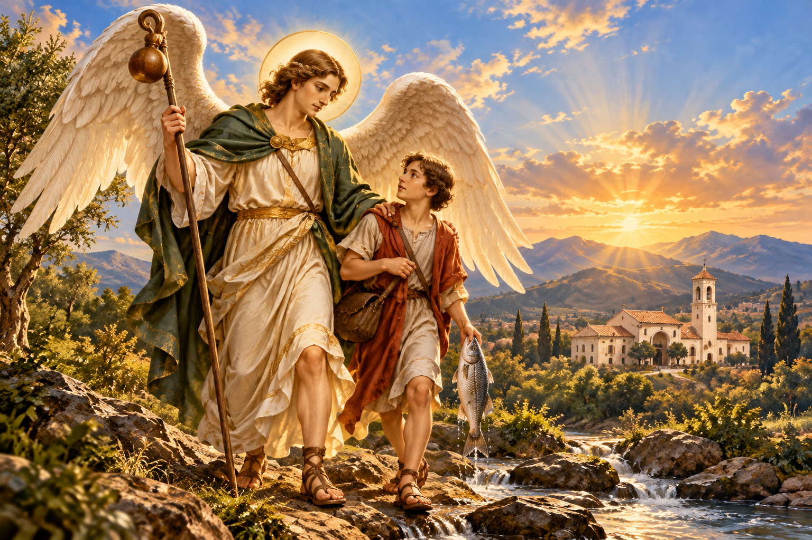

Nuestra parroquia
Una comunidad de fe, tradición y servicio en San Rafael de Alajuela.
«Caminamos juntos en la fe y el amor de Dios»
Misión
Acompañar a nuestra comunidad en su camino de fe, promoviendo la evangelización, la celebración de los sacramentos, la fraternidad y el servicio al prójimo.
Visión
Ser una comunidad parroquial unida, participativa y acogedora, que fortalezca su vida espiritual y transmita la fe y sus tradiciones a las futuras generaciones.
Valores
Vivimos nuestra fe a través del amor, la solidaridad, el respeto, la esperanza y el compromiso de servir a los demás.
Nuestra comunidad
San Rafael de Alajuela es una comunidad de historia y tradiciones, donde generaciones de familias han contribuido a mantener viva la fe y el espíritu de colaboración que caracteriza a nuestra parroquia.
Parroquia San Rafael Arcángel
Nuestra historia
Fe, tradición y comunidad en San Rafael de Alajuela
San Rafael de Alajuela, conocido históricamente como San Rafael de Ojo de Agua, es una comunidad con más de un siglo de historia documentada en torno a su vida religiosa. A lo largo de generaciones, su desarrollo ha estado vinculado a la fe, las tradiciones y el compromiso de sus habitantes.
La historia de la Parroquia San Rafael Arcángel comenzó mucho antes de su fundación oficial. En 1912 ya existía un pequeño oratorio de adobe y teja, donde los vecinos se reunían para celebrar su fe y honrar a San Rafael Arcángel, patrono de la comunidad.
Con el crecimiento de la población, la vida religiosa también se fortaleció. En 1935 se estableció la Coadjutoría Territorial de San Rafael de Ojo de Agua y, finalmente, el 1.º de enero de 1960, nació oficialmente la Parroquia San Rafael Arcángel.
En 1970 comenzó la construcción del templo actual, en sustitución de la antigua iglesia de adobe. Desde entonces, el edificio ha experimentado distintas transformaciones, especialmente en su altar mayor, sus vitrales y sus elementos artísticos.
Uno de sus acontecimientos más significativos fue la bendición del retablo del altar mayor, el 23 de octubre de 2021, culminación de un esfuerzo desarrollado durante aproximadamente 17 años con la participación y el apoyo de numerosas familias y personas de la comunidad.
Hoy, la parroquia continúa siendo un espacio de encuentro, celebración y servicio, donde la historia de San Rafael se mantiene viva a través de su gente y sus tradiciones.

Una historia construida con fe, esfuerzo y el compromiso de generaciones de sanrafaeleños.

Nuestro patrono
San Rafael Arcángel
San Rafael Arcángel, cuyo nombre significa «Dios sana», es reconocido como guía, protector y mensajero de la sanación divina. En el libro de Tobías, acompaña al joven durante su viaje y lo ayuda a superar las dificultades.
Como patrono de nuestra comunidad, nos inspira a caminar con fe, esperanza y espíritu de servicio.
Conocer más sobre San Rafael ArcángelGalería de nuestra parroquia
Nuestro párroco
Pbro. Alexander Ramírez Arguedas
Biografía pendiente de confirmar con la parroquia.
Biografía pendiente de confirmar con la parroquia.
«Cita del párroco — contenido de ejemplo, pendiente de definir con la parroquia.»